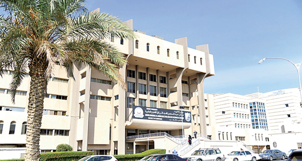

كلية العلوم الطبية المساعدة - جامعة الكويت

معلومات عامة
تعـد من الكليات الحديثة، فقد انفصلت عن كلية الطب في 22/ 6/1982 بعد أن كانت جزءاً منها، وتمنح الكلية درجة البكالوريوس في أربعة تخصصات في مجال الطب المساعد، وقد أقر مجلس الجامعة برامج العلوم الطبية المساعدة في يونيو 1978 وقامت الكلية بإستقبال طلبتها في سبتمبر 1978

موقع الكلية على خرائط قوقل

التخصصات المتوفرة في الكلية
علوم المختبرات الطبية - العلاج الطبيعي - المعلوماتية وإدارة المعلومات الصحية - علوم الأشعة - العلاج المهني

مجالات عمل الخرّيج
العمل كأخصائي مختبرات طبية في المختبرات بالمستشفيات والعيادات الطبية والمراكز الصحية والمدن الطبية - المراكز البحثية الطبية والمختبرات الوراثية ومختبرات التخصيب ومعالجة العقم - المنشآت التعليمية كالمدارس والجامعات والكليات الصحية - مراكز الأدوية والسموم - مجالات تنمية المنتجات الطبية كالشركات الطبية المسؤولة عن توريد المحاليل والأجهزة الطبية

النسب و شروط القبول
ألا تقل نسبة الطالب المتقدم للكلية عن 80 % في شهادة الثانوية العامة (القسم العلمي) أو ما يعادلها
تكون الأولوية في القبـول للطلبة الحاصلين على أعلى معدل مكافئ محسوباً بناءً على نسبة الثانوية ونتائج
امتحانات القدرات للطالب وفقا للأوزان التالية
65 % من نسبة الشهادة الثانوية-
15 % من نتيجة امتحان القدرات اللغة الإنجليزية-
10 % من نتيجة امتحان القدرات الرياضيات -
10 % من نتيجة امتحان الكيمياء-

فيديو من الكلية